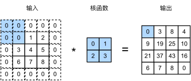
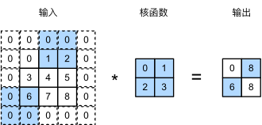

填充和步幅#
在前面的例子输入的高度和宽度都为\(3\)，卷积核的高度和宽度都为\(2\)，生成的输出表征的维数为\(2\times2\)。 假设输入形状为\(n_h\times n_w\)，卷积核形状为\(k_h\times k_w\)，那么输出形状将是\((n_h-k_h+1) \times (n_w-k_w+1)\)。 因此，卷积的输出形状取决于输入形状和卷积核的形状。
还有什么因素会影响输出的大小呢？本节我们将介绍填充（padding）和步幅（stride）。假设以下情景： 有时，在应用了连续的卷积之后，我们最终得到的输出远小于输入大小。这是由于卷积核的宽度和高度通常大于\(1\)所导致的。比如，一个\(240 \times 240\)像素的图像，经过\(10\)层\(5 \times 5\)的卷积后，将减少到\(200 \times 200\)像素。如此一来，原始图像的边界丢失了许多有用信息。而填充是解决此问题最有效的方法； 有时，我们可能希望大幅降低图像的宽度和高度。例如，如果我们发现原始的输入分辨率十分冗余。步幅则可以在这类情况下提供帮助。
填充#
如上所述，在应用多层卷积时，我们常常丢失边缘像素。 由于我们通常使用小卷积核，因此对于任何单个卷积，我们可能只会丢失几个像素。 但随着我们应用许多连续卷积层，累积丢失的像素数就多了。 解决这个问题的简单方法即为填充（padding）：在输入图像的边界填充元素（通常填充元素是\(0\)）。 例如，在下图中，我们将\(3 \times 3\)输入填充到\(5 \times 5\)，那么它的输出就增加为\(4 \times 4\)。阴影部分是第一个输出元素以及用于输出计算的输入和核张量元素： \(0\times0+0\times1+0\times2+0\times3=0\)。
通常，如果我们添加\(p_h\)行填充（大约一半在顶部，一半在底部）和\(p_w\)列填充（左侧大约一半，右侧一半），则输出形状将为
可以理解为如果我们使用了
nn.Conv2d()函数，然后把参数padding=(2,4)赋值进去，这个值就是\(p_h=2*2=4\)，\(p_w=2*4=8\)，因为这个参数是指单边的

这意味着输出的高度和宽度将分别增加\(p_h\)和\(p_w\)。
在许多情况下，我们需要设置\(p_h=k_h-1\)和\(p_w=k_w-1\)，使输入和输出具有相同的高度和宽度。
当\(k_h\)是奇数，在上下两侧填充\(p_h/2\)行。
当\(k_h\)是偶数，在输入顶部填充\(\lceil p_h/2\rceil\)行，在底部填充\(\lfloor p_h/2\rfloor\)行。
卷积神经网络中卷积核的高度和宽度通常为奇数，例如1、3、5或7。 选择奇数的好处是，保持空间维度的同时，我们可以在顶部和底部填充相同数量的行，在左侧和右侧填充相同数量的列。
此外，使用奇数的核大小和填充大小也提供了书写上的便利。对于任何二维张量X，当满足：
卷积核的大小是奇数；
所有边的填充行数和列数相同；
输出与输入具有相同高度和宽度 则可以得出：输出
Y[i, j]是通过以输入X[i, j]为中心，与卷积核进行互相关计算得到的。
比如，在下面的例子中，我们创建一个高度和宽度为3的二维卷积层，并在所有侧边填充1个像素。给定高度和宽度为8的输入，则输出的高度和宽度也是8。
import torch
from torch import nn
# 为了方便起见，我们定义了一个计算卷积层的函数。
# 此函数初始化卷积层权重，并对输入和输出提高和缩减相应的维数
def comp_conv2d(conv2d, X):
# 这里的（1，1）表示批量大小和通道数都是1
X = X.reshape((1, 1) + X.shape)
Y = conv2d(X)
# 省略前两个维度：批量大小和通道
return Y.reshape(Y.shape[2:])
# 请注意，这里每边都填充了1行或1列，因此总共添加了2行或2列
conv2d = nn.Conv2d(1, 1, kernel_size=3, padding=1)
X = torch.rand(size=(8, 8))
comp_conv2d(conv2d, X).shape
torch.Size([8, 8])
当卷积核的高度和宽度不同时，我们可以填充不同的高度和宽度，使输出和输入具有相同的高度和宽度。在如下示例中，我们使用高度为5，宽度为3的卷积核，高度和宽度两边的填充分别为2和1。
conv2d = nn.Conv2d(1, 1, kernel_size=(5, 3), padding=(2, 1))
comp_conv2d(conv2d, X).shape
torch.Size([8, 8])
步幅#
填充减少的输出大小与层数线性相关
给定输入大小\(224*224\)，在使用\(5*5\)卷积核的情况下，需要44层将输出降低到\(4*4\)
需要大量计算才能得到较小输出
我们将每次滑动元素的数量称为步幅（stride）。 下图是垂直步幅为\(3\)，水平步幅为\(2\)的二维互相关运算。 着色部分是输出元素以及用于输出计算的输入和内核张量元素：\(0\times0+0\times1+1\times2+2\times3=8\)、\(0\times0+6\times1+0\times2+0\times3=6\)。
可以看到，为了计算输出中第一列的第二个元素和第一行的第二个元素，卷积窗口分别向下滑动三行和向右滑动两列。但是，当卷积窗口继续向右滑动两列时，没有输出，因为输入元素无法填充窗口（除非我们添加另一列填充）。
通常，当垂直步幅为\(s_h\)、水平步幅为\(s_w\)时，输出形状为
如果我们设置了\(p_h=k_h-1\)和\(p_w=k_w-1\)，则输出形状将简化为\(\lfloor(n_h+s_h-1)/s_h\rfloor \times \lfloor(n_w+s_w-1)/s_w\rfloor\)。
更进一步，如果输入的高度和宽度可以被垂直和水平步幅整除，则输出形状将为\((n_h/s_h) \times (n_w/s_w)\)。

下面，我们将高度和宽度的步幅设置为2，从而将输入的高度和宽度减半。
conv2d = nn.Conv2d(1, 1, kernel_size=3, padding=1, stride=2)
comp_conv2d(conv2d, X).shape
torch.Size([4, 4])
因为行列都一样，计算后结果需要向下取整，所以计算如下：
接下来，看一个稍微复杂的例子。
conv2d = nn.Conv2d(1, 1, kernel_size=(3, 5), padding=(0, 1), stride=(3, 4))
comp_conv2d(conv2d, X).shape
torch.Size([2, 2])
复杂例子的计算公式：
行： $\(\lfloor\frac{8-3+0*2+3}{3}\rfloor=2\)\( 列： \)\(\lfloor\frac{8-5+1*2+4}{4}\rfloor=2\)$